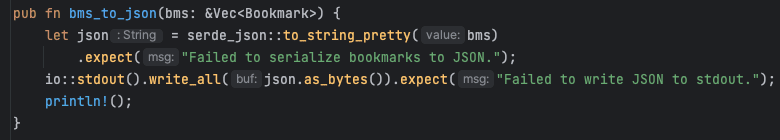

ChatGPT in Software Development
Describe the target, let the machine figure it out.
The world has changed.
I know, there are many similar blog articles stating the obvious: Certain professions will have to re-define themselves.
I will just show examples of how ChatGPT is about changing my workflow and improving my life.
Infrastructure as Code
One workflow to deploy new infrastructure often is to work interactively with the cloud’s provider graphical UI and rewrite it in the IaC suite of your choice. Re-writing it feels like redundant work, though.
Using terraform as an example there are several options:
terraform import- terraformer
- terracognita
- …
They all work (to some degree). However, the mental impedance for using them only once in a while is considerable, e.g. remembering the syntax, gotchas, etc…
This is a general problem with all tools, which are used only sporadically.
My new workflow is:
- create the components in AWS console
- describe them with
aws describe - let ChatGPT create the initial terraform (hcl)
- refine the terraform in a dialog with ChatGPT, e.g. parametrize the resources, add output, create modules, etc…
Metaprogramming
Given a Rust struct, I want to implement a function to serialize it to json.
Not a super fancy problem, but since I am not using Rust on daily basis it requires a bit of re-adjusting mental state in order get me back into Rust syntax, crate ecosystem, CI/CD, etc.
Not any more!
Ask ChatGPT:
The result is comprehensive advice which imports to add:
the actual working function:

the updated model:
Implementing a new feature (json serialization for bkmr) from start till uploaded crate on crates.io took less then 45 minutes.
Mathematical Programming
How can ChatGPT handle Math and especially Mathematical Programming? For this I selected a simple example of a non linear optimization problem 1:
Given multiple sets of data points. Select one point per set so that the distances between the points is minimal.
This can be modelled straight foward as a mixed integer quadratic problem.
Non-convex MIQP Model
$$ \min \sum_{i,j| ok_{i,j}} \color{darkblue}dist_{i,j}\cdot\color{darkred}x_i \cdot\color{darkred}x_j \\ \sum_{i|\color{darkblue}{\mathit{group}}_{i,g}} \color{darkred}x_i = 1 \forall g\\ \color{darkred}x_i \in {0,1} $$
I want to use a linear MIP solver, so I ask ChatGPT to linearize the model:


Result
“To linearize the given model, we can introduce a new binary variable, $z_{i,j}$, that represents the product of the binary variables $\color{darkred}x_i$ and $\color{darkred}x_j$. This new variable will replace the nonlinear term in the objective function, making the model linear. We will also add constraints to link the new variable $z_{i,j}$ with the original variables $\color{darkred}x_i$ and $\color{darkred}x_j$.
The linearized model can be written as:
\begin{align} \min&\sum_{i,j|ok_{i,j}} dist_{i,j}\cdot z_{i,j} \\ & \sum_{i|group_{i,g}} x_i = 1 && \forall g\\ & x_i \in {0,1} \\ & z_{i,j} \leq x_i && \forall i,j|ok_{i,j} \\ & z_{i,j} \leq x_j && \forall i,j|ok_{i,j} \\ & z_{i,j} \geq x_i + x_j - 1 && \forall i,j|ok_{i,j} \\ & z_{i,j} \in {0,1} && \forall i,j|ok_{i,j} \end{align}
In this linearized model, the nonlinear term $\color{darkred}x_i \cdot \color{darkred}x_j$ has been replaced by the new variable $z_{i,j}$ in the objective function. The constraints have been added to ensure the relationship between $z_{i,j}$, $\color{darkred}x_i$, and $\color{darkred}x_j$.”
The linearization is correct, as is the Latex output. This is pretty amazing! ChatGPT does not care which encoding you use to phrase your problem, it can speak Latex.
Here is the full article.
Summary
The striking feature of ChatGPT for me is the promise of having ONE UNIFIED INTERFACE for all heterogenous tasks that I need to get done.
It is the universal translation layer to all different languages and tools which I need to use for my daily work. DSL hell seems to be finally a thing of the past!
In addition to that it feels like having a personal consultant sitting next to you, waiting to answer your questions and provide you with valuable reasoning.
If I can describe my task and desired outcome properly, ChatGPT happily translate it into whatever API, tool, DSL, programming language, formula I need.
The productivity gain is huge, but the mental peace of mind of having the syntax problem solved is priceless.
Caveat Emptor
With all the incredible results it is important not to forget, that
-
the responsibility for any outcome lies with you. DO NOT rely on ChatGPT answers which you cannot 100% verify or do not fully comprehend!
In code this is easy, either it runs or it does not. It is much more difficult (if not impossible) outside of STEM (science, technology, engineering, math).
-
assume everything you enter to become part of ChatGPT’s knowledge body. It is like asking a question on StackOverflow.